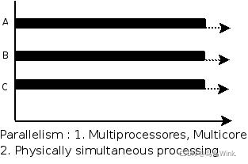
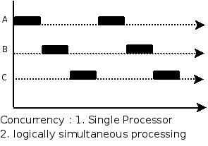

Java Multi Thread
Last updated: Jun 21, 2024Table of Contents
Java Multi-thread FAQ
- https://javaguide.cn/java/concurrent/java-concurrent-questions-01.html
- https://javaguide.cn/java/concurrent/java-concurrent-questions-02.html
- https://javaguide.cn/java/concurrent/java-concurrent-questions-03.html
Java multi thread ?
並發(Concurrent) VS 並行(parallel)
並行(parallel): 同ㄧ時刻, 多個指令在多個處理器同時運行

並發(Concurrent): 同ㄧ時刻, 只有ㄧ個指令運行, 但多個進程被交錯運行 (並非同時運行), 把時間段切成小塊, 多個進程快速交替運行

Async VS Sync ?
- Async : return and NOT wait till receive response
- Sync : ONLY return and when receive response
同步：發出一個呼叫之後，在沒有得到結果之前， 該呼叫就不可以返回，一直等待。 非同步：呼叫在發出之後，不用等待返回結果，該呼叫直接傳回。
volatile explain ?
在 Java 中，volatile 關鍵字除了保證變數的可見性，還有一個重要的功能是防止 JVM 的指令重新排序。 如果我們將變數宣告為 volatile ，在對這個變數進行讀寫操作的時候，會透過插入特定的 記憶體屏障 的方式來禁止指令重排序。
// java
// example : Singleton
public class Singleton {
/** volatile */
private volatile static Singleton uniqueInstance;
private Singleton() {
}
public static Singleton getUniqueInstance() {
//先判断对象是否已经实例过，没有实例化过才进入加锁代码
if (uniqueInstance == null) {
//类对象加锁
synchronized (Singleton.class) {
if (uniqueInstance == null) {
uniqueInstance = new Singleton();
}
}
}
return uniqueInstance;
}
}
uniqueInstance 採用volatile 關鍵字修飾也是必要的， uniqueInstance = new Singleton(); 這段程式碼其實是分為三步驟執行：為uniqueInstance 分配記憶體空間初始化uniqueInstance將uniqueInstance 指向分配的記憶體位址但是由於JVM 具有指令重 排的特性，執行順序有可能變成1->3->2。 指令重排在單執行緒環境下不會出現問題，但是在多執行緒環境下會導致一個執行緒獲得還沒有初始化的實例。 例如，執行緒 T1 執行了 1 和 3，此時 T2 呼叫 getUniqueInstance() 後發現 uniqueInstance 不為空，因此傳回 uniqueInstance，但此時 uniqueInstance 還未被初始化。
樂觀鎖 VS 悲觀鎖
-
悲觀鎖
- 悲觀鎖總是假設最壞的情況，認為共享資源每次被訪問的時候就會出現問題(比如共享資料被修改)，所以每次在獲取資源操作的時候都會上鎖，這樣其他線程想拿到 這個資源就會阻塞直到鎖被上一個持有者釋放。 也就是說，共享資源每次只給一個執行緒使用，其它執行緒阻塞，用完後再把資源轉讓給其它執行緒。
- example : synchronized, ReentrantLock
-
樂觀鎖
- 版本號控制
- CAS算法 (compare and swap)
-
Comparision:
- 悲觀鎖 多用於
寫比較多的情況（多寫場景，競爭激烈），這樣可以避免頻繁失敗和重試影響性能，悲觀鎖的開銷是固定的。 不過，如果樂觀鎖解決了頻繁失敗和重試這個問題的話（例如LongAdder），也是可以考慮使用樂觀鎖的，要視實際情況而定。 - 樂觀鎖 多用於
寫比較少的情況（多讀場景，競爭較少），這樣可以避免頻繁加鎖影響效能. 不過，樂觀鎖定主要針對的物件是單一共享變數（參考java.util.concurrent.atomic套件下面的原子變數類別
- 悲觀鎖 多用於
-
https://javaguide.cn/java/concurrent/java-concurrent-questions-02.html#什么是乐观锁
synchronized explain ?
- 修飾實例方法
- 修飾靜態方法
- 修飾代碼塊
-
synchronized 關鍵字加到static 靜態方法和synchronized(class) 程式碼區塊上都是是給Class 類別上鎖；
-
synchronized 關鍵字加到實例方法上是給物件實例上鎖；
-
盡量不要使用synchronized(String a) 因為JVM 中，字串常數池具有快取功能
-
https://javaguide.cn/java/concurrent/java-concurrent-questions-02.html#如何使用-synchronized
-
https://tech.youzan.com/javasuo-yu-xian-cheng-de-na-xie-shi/
ReentrantLock ?
synchronized VS ReentrantLock ?
-
都是可重入鎖
- 可重入鎖 也叫遞歸鎖，指的是線程可以再次取得自己的內部鎖。 例如一個執行緒獲得了某個物件的鎖，此時這個物件鎖還沒有釋放，當其再次想要取得這個物件的鎖的時候還是可以取得的，如果是不可重入鎖的話，就會造成死鎖 。
-
synchronized 依赖于 JVM 而 ReentrantLock 依赖于 API
- synchronized 的優化屬於JVM虛擬機層面, 並沒有暴露給用戶
- ReentrantLock 的優化是API層面, 暴露了 lock() 和 unlock() 方法配合 try/finally
-
ReentrantLock 比 synchronized 增加了一些高级功能
- 等待可中断 : lock.lockInterruptibly()
- 可實現公平鎖 : ReentrantLock(boolean fair)
- 可實現選擇性通知(鎖綁定多個條件) : wait()和notify()/notifyAll(), newCondition()
-
ReentrantLock 是可中斷鎖, synchronized是不可中斷鎖
-
https://javaguide.cn/java/concurrent/java-concurrent-questions-02.html#synchronized-和-volatile-有什么区别
Atom class ?
Atomic 是指一個操作是不可中斷的。 即使在多個執行緒一起執行的時候，一個操作一旦開始，就不會被其他執行緒干擾。 所以，所謂原子類說簡單點就是具有原子/原子操作特徵的類別。